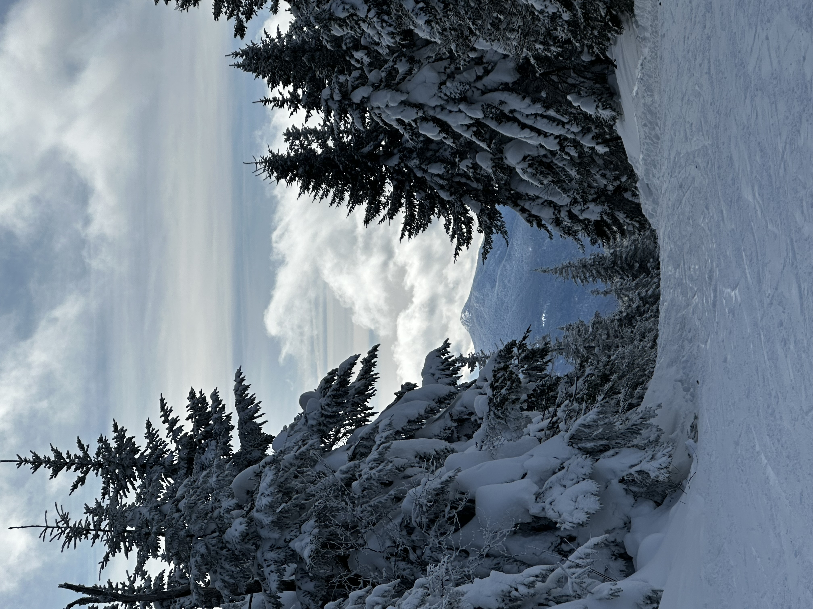

In addition to school, I have many hobbies! Some of them include:
This photo above is from my trip to New Hampshire with my friends this past month! We went to both Gunstock mountain, did some night skiing there, and then also went to Ragged Mountain. The conditions on Ragged were so beautiful as it had been snowing for over 24 hours leading up to our arrival to the mountain. There was over a foot of fresh snow, and this gave me the confidence to pull off some new things on my snowboard. For the first time, I was able to go down a black diamond (one of the hardest trails on a mountain) as well as doing a jump and catching a lot of airtime (and even sticking the landing). I have been snowboarding for about 4 years now, but I only learned how to properly carve down a mountain last year. I enjoyed it so much that I decided to buy an IKON Pass this winter season. This pass gives me access to a bunch of mountains all around the world but I have only really used it on the East Coast. I have been thinking about buying a pass for next season to go to Japan! I’ve heard that the snow there is beautiful so it is a dream of mine to go.
